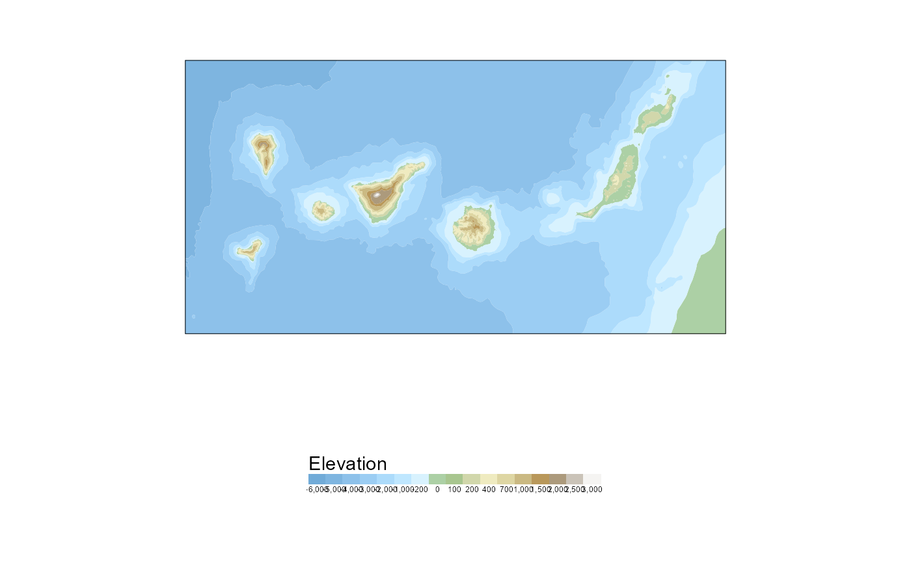
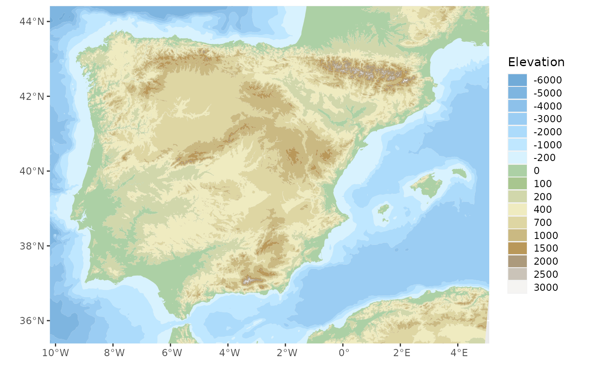

Get sf polygons and lines with the hypsometry and bathymetry of Spain
Código R/esp_get_hypsobath.R
esp_get_hypsobath.RdLoads a sf polygon or line object representing the hypsometry and
bathymetry of Spain.
Hypsometry represents the the elevation and depth of features of the Earth's surface relative to mean sea level.
Bathymetry is the measurement of the depth of water in oceans, rivers, or lakes.
Usage
esp_get_hypsobath(
epsg = "4258",
cache = TRUE,
update_cache = FALSE,
cache_dir = NULL,
verbose = FALSE,
resolution = "3",
spatialtype = "area"
)Código
IGN data via a custom CDN (see https://github.com/rOpenSpain/mapSpain/tree/sianedata).
Argumentos
- epsg
projection of the map: 4-digit EPSG code. One of:
"4258": ETRS89"4326": WGS84"3035": ETRS89 / ETRS-LAEA"3857": Pseudo-Mercator
- cache
A logical whether to do caching. Default is
TRUE. See About caching.- update_cache
A logical whether to update cache. Default is
FALSE. When set toTRUEit would force a fresh download of the source file.- cache_dir
A path to a cache directory. See About caching.
- verbose
Logical, displays information. Useful for debugging, default is
FALSE.- resolution
Resolution of the shape. Values available are
"3"or"6.5".- spatialtype
Spatial type of the output. Use
"area"for polygons or"line"for lines.
Detalles
Metadata available on https://github.com/rOpenSpain/mapSpain/tree/sianedata/.
About caching
You can set your cache_dir with esp_set_cache_dir().
Sometimes cached files may be corrupt. On that case, try re-downloading
the data setting update_cache = TRUE.
If you experience any problem on download, try to download the
corresponding .geojson file by any other method and save it on your
cache_dir. Use the option verbose = TRUE for debugging the API query.
Véa también
Other natural:
esp_get_hydrobasin(),
esp_get_rivers()
Ejemplos
# \donttest{
# This code would produce a nice plot - It will take a few seconds to run
library(ggplot2)
hypsobath <- esp_get_hypsobath()
# Error on the data provided - There is an empty shape
# Remove:
hypsobath <- hypsobath[!sf::st_is_empty(hypsobath), ]
# Tints from Wikipedia
# https://en.wikipedia.org/wiki/Wikipedia:WikiProject_Maps/Conventions/Topographic_maps
bath_tints <- colorRampPalette(
rev(
c(
"#D8F2FE", "#C6ECFF", "#B9E3FF",
"#ACDBFB", "#A1D2F7", "#96C9F0",
"#8DC1EA", "#84B9E3", "#79B2DE",
"#71ABD8"
)
)
)
hyps_tints <- colorRampPalette(
rev(
c(
"#F5F4F2", "#E0DED8", "#CAC3B8", "#BAAE9A",
"#AC9A7C", "#AA8753", "#B9985A", "#C3A76B",
"#CAB982", "#D3CA9D", "#DED6A3", "#E8E1B6",
"#EFEBC0", "#E1E4B5", "#D1D7AB", "#BDCC96",
"#A8C68F", "#94BF8B", "#ACD0A5"
)
)
)
levels <- sort(unique(hypsobath$val_inf))
# Create palette
br_bath <- length(levels[levels < 0])
br_terrain <- length(levels) - br_bath
pal <- c(bath_tints((br_bath)), hyps_tints((br_terrain)))
# Plot Canary Islands
ggplot(hypsobath) +
geom_sf(aes(fill = as.factor(val_inf)),
color = NA
) +
coord_sf(
xlim = c(-18.6, -13),
ylim = c(27, 29.5)
) +
scale_fill_manual(values = pal) +
guides(fill = guide_legend(
title = "Elevation",
direction = "horizontal",
label.position = "bottom",
title.position = "top",
nrow = 1
)) +
theme(legend.position = "bottom")

# Plot Mainland
ggplot(hypsobath) +
geom_sf(aes(fill = as.factor(val_inf)),
color = NA
) +
coord_sf(
xlim = c(-9.5, 4.4),
ylim = c(35.8, 44)
) +
scale_fill_manual(values = pal) +
guides(fill = guide_legend(
title = "Elevation",
reverse = TRUE,
keyheight = .8
))

# }